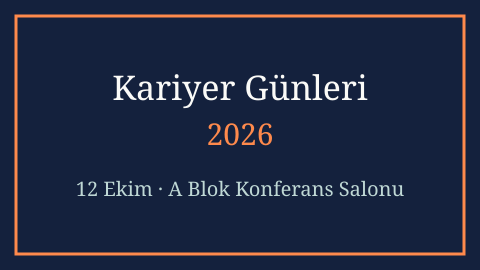

Etkinlik Künyesi
- Tarih
- Yer
- A Blok Konferans Salonu
- Kategori
- Seminer
- Kontenjan
- 120 kişi
- Düzenleyen
- Bilgisayar Mühendisliği Bölümü
Açıklama
Kariyer Günleri 2026 kapsamında mezunlarımız iş hayatına geçiş süreçlerini anlatacak, ardından katılımcı şirketlerin standlarında staj ve işe alım görüşmeleri yapılacaktır.
Program üç oturumdan oluşur: açılış konuşması, mezun paneli ve serbest görüşme. Katılım ücretsizdir, kayıt gerekmez.